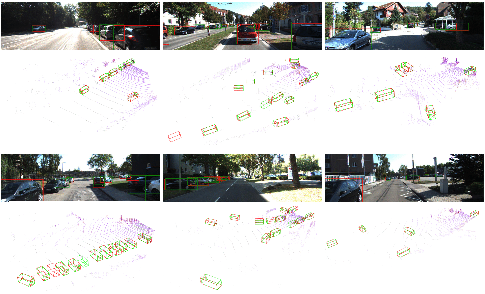
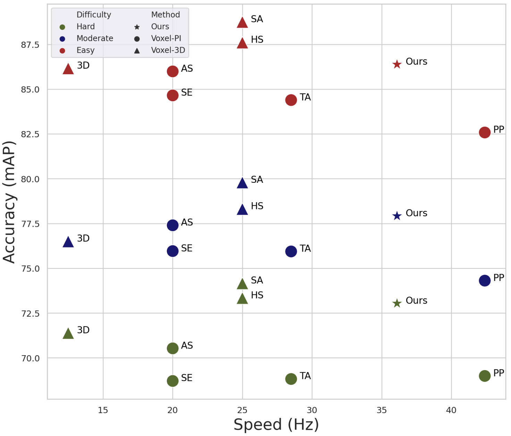
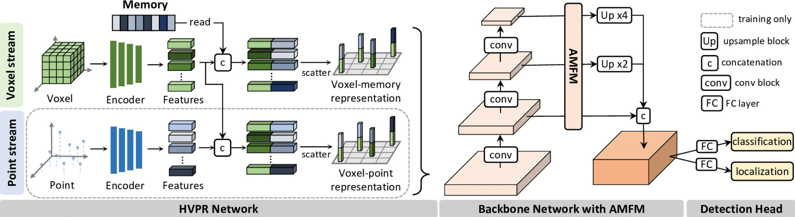
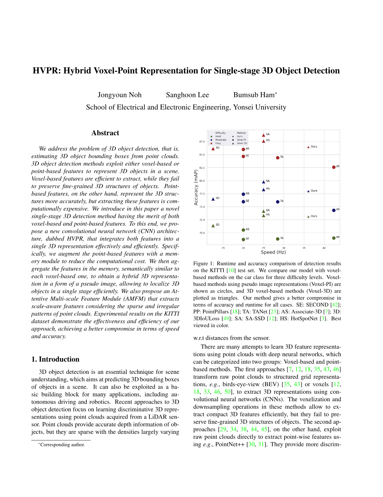

<!DOCTYPE html>
<html lang="en"><head><meta http-equiv="Content-Type" content="text/html; charset=UTF-8">
	
	<title>HVPR: Hybrid Voxel-Point Representation for Single-stage 3D Object Detection</title>
	<meta name="author" content="CV-lab">

	<link href="./HVPR_files/bootstrap.min.css" rel="stylesheet">
    <link href="./HVPR_files/style.css" rel="stylesheet">
  <script type="text/x-mathjax-config">
  MathJax.Hub.Config({
    tex2jax: {inlineMath: [['$','$'], ['\\(','\\)']]}
  });
  </script>
  <script src="https://cdnjs.cloudflare.com/ajax/libs/mathjax/2.7.5/latest.js?config=TeX-MML-AM_CHTML"></script>
</head>

  <body>

    <div class="container">
      <div class="header">
        <div style="font-size: 20px">
        <h1> <center> HVPR: Hybrid Voxel-Point Representation for <br>Single-stage 3D Object Detection </center> </h1>
        <h4 style="color: #517CB9; font-size: 20px"> <center> <a href="http://cvpr2021.thecvf.com/"><b>*CVPR-2021*</b></a> </center></center></h4>
        </div>
      </div>

      
      <p style="text-align: justify;">
      <div style="font-size: 14px">
         
      </p>  
      <div>
      
        Qualitative results on the validation split of KITTI. Our predictions and ground-truth bounding boxes are shown in green and red, respectively. Our method localizes small and/or occluded objects well, except the heavily occluded ones, e.g., in the left-bottom of the top-middle image. We also show 2D bounding boxes projected from 3D detection results.
        </p>
        </div>

      <div class="row">
      	<h3>Authors</h3>
      	<div style="font-size: 16px">
      	<ul>
            <li><a href="https://github.com/njyoun">Jongyoun Noh</a></li>
            <li><a href="https://github.com/sanghoooon">Sanghoon Lee</a></li>
            <li><a href="https://bsham.github.io/">Bumsub Ham</a></li>
      	</ul>
      	</div>
        

      </div>

      <div class="row">
        <h3>Abstract</h3>
        <p style="text-align: justify;">
        We address the problem of 3D object detection, that is, estimating 3D object bounding boxes from point clouds. 3D object detection methods exploit either voxel-based or point-based features to represent 3D objects in a scene. Voxel-based features are efficient to extract, while they fail to preserve fine-grained 3D structures of objects. Point-based features, on the other hand, represent the 3D structures more accurately, but extracting these features is computationally expensive. We introduce in this paper a novel single-stage 3D detection method having the merit of both voxel-based and point-based features. To this end, we propose a new convolutional neural network (CNN) architecture, dubbed HVPR, that integrates both features into a single 3D representation effectively and efficiently. Specifically, we augment the point-based features with a memory module to reduce the computational cost. We then aggregate the features in the memory, semantically similar to each voxel-based one, to obtain a hybrid 3D representation in a form of a pseudo image, allowing to localize 3D objects in a single stage efficiently. We also propose an Attentive Multi-scale Feature Module (AMFM) that extracts scale-aware features considering the sparse and irregular patterns of point clouds. Experimental results on the KITTI dataset demonstrate the effectiveness and efficiency of our approach, achieving a better compromise in terms of speed and accuracy.

        </p>  
        <div style="font-size: 14px">
        <p style="text-align: justify;">
        <br>
        
        <br>
        Runtime and accuracy comparison of detection results on the KITTI test set. We compare our model with voxel-based methods on the car class for three difficulty levels. Voxel-based methods using pseudo image representations (Voxel-PI) are shown as circles, and 3D voxel-based methods (Voxel-3D) are plotted as triangles. Our method gives a better compromise in terms of accuracy and runtime for all cases. <br>SE: SECOND ; PP: PointPillars; TA: TANet; AS: Associate-3D; 3D: 3DIoULoss; SA: SA-SSD; HS: HotSpotNet.
        </p>
        </div>
      </div>

      <div class="row">
      	<h3>Framework</h3>
        <p style="text-align: justify;">
        
        </p>
      <div>
      <p style="text-align: justify;">
       An overview of our framework. The HVPR network inputs point clouds and generates two types of hybrid 3D features via a two-stream encoder: Voxel-point and voxel-memory representations. The former representations are obtained by aggregating point-based features for individual voxel-based ones. For the later ones, we also perform the aggregation but with memory items, instead of using point-based features. That is, we augment the point-based features using a memory module, and exploit voxel-memory representations, i.e., hybrid 3D features, at test time for fast inference. The backbone network with AMFM inputs the voxel-memory representations to extract multiple scale-aware features, and the detection head predicts 3D bounding boxes and object classes.
       </p>
       </div>
      </div>

      <div class="row">
        <h3>Paper</h3>
	<p>
     </p><table>
  <tbody><tr></tr>
  <tr><td>
    <a href="https://arxiv.org/abs/2104.00902"></a>
  </td>
  <td></td>
  <td>
    J. Noh, S.Lee, B. Ham<br>
    <b>HVPR: Hybrid Voxel-Point Representation for Single-stage 3D Object Detection</b> <br>
    In <i>Proceedings of the IEEE/CVF Conference on Computer Vision and Pattern Recognition (CVPR) </i>, 2021 <br>
    [<a href="https://arxiv.org/abs/2104.00902.pdf">Paper on arXiv</a>] [<a href="https://github.com/cvlab-yonsei/HVPR">Code will be released soon</a>]
</td></tr></tbody></table>
     
      <h3>BibTeX</h3>
     <pre><tt>
	</tt></pre>
      
      <div class="row">
        <h3>Acknowledgements</h3>
        <p>
        This research was partly supported by R&D program for Advanced Integrated-intelligence for Identification (AIID) through the National Research Foundation of KOREA (NRF) funded by Ministry of Science and ICT (NRF-2018M3E3A1057289), and Institute for Information and Communications Technology Promotion (IITP) funded by the Korean Government (MSIP) under Grant 2016-0-00197.
        
		</p>
      </div>

    </div>
